Привет!
Меня зовут Мустафо. Я люблю играть в футбол.
Почему я люблю футбол
- Это командная игра
- Нужны скорость и хороший пас
- Футбол учит дружбе
Моя любимая команда
Фан-клуб Мустафо
Я болею за Реал Мадрид, потому что этот клуб сильный.
⭐ Мои любимые игроки
Топ-3 игроков по позициям в истории
🧤 Вратари
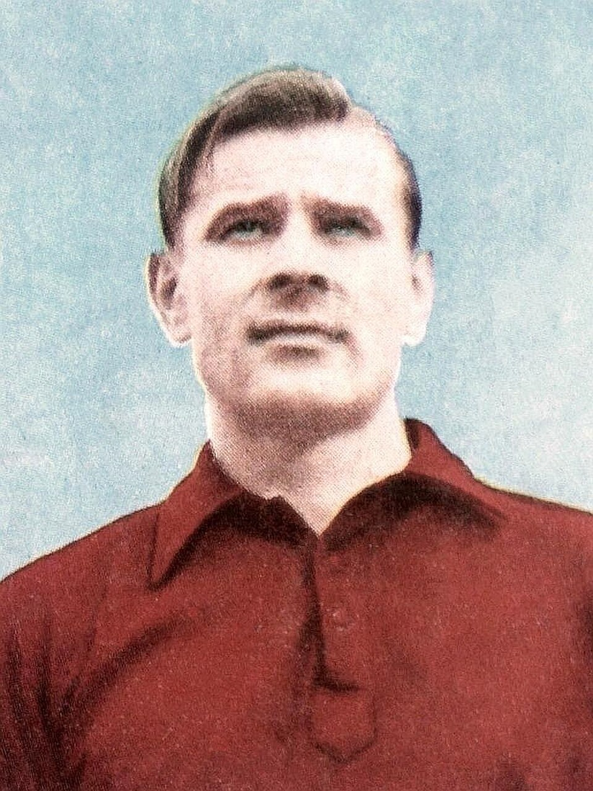
Лев Яшин
Клуб: Динамо (Москва)
Скорость: 60
Пас (вынос): 75
Удар: 33
Рефлексы: 94
Нырки: 93
Выбор позиции: 93
Игра руками: 89
Физика (сила): 76
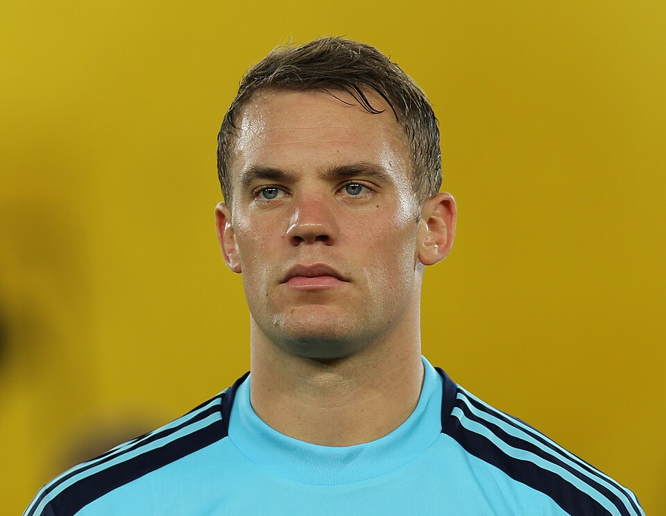
Фото: Bryan Berlin / WikiPortraits, Wikimedia Commons
Мануэль Нойер
Клуб: Бавария (Германия)
Скорость: 80
Пас: 87
Удар: 80
Защита: 31
Физика (сила): 80
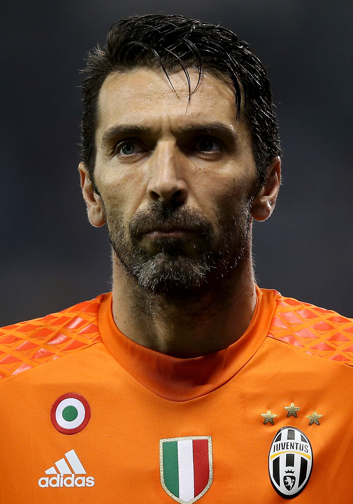
Джанлуиджи Буффон
Клуб: Ювентус (Италия)
Скорость: 34
Пас: 35–40
Вынос (Kicking): 74
Удар: 15–35
Защита: 13–33
Физика (сила): 75
🛡️ Защитники
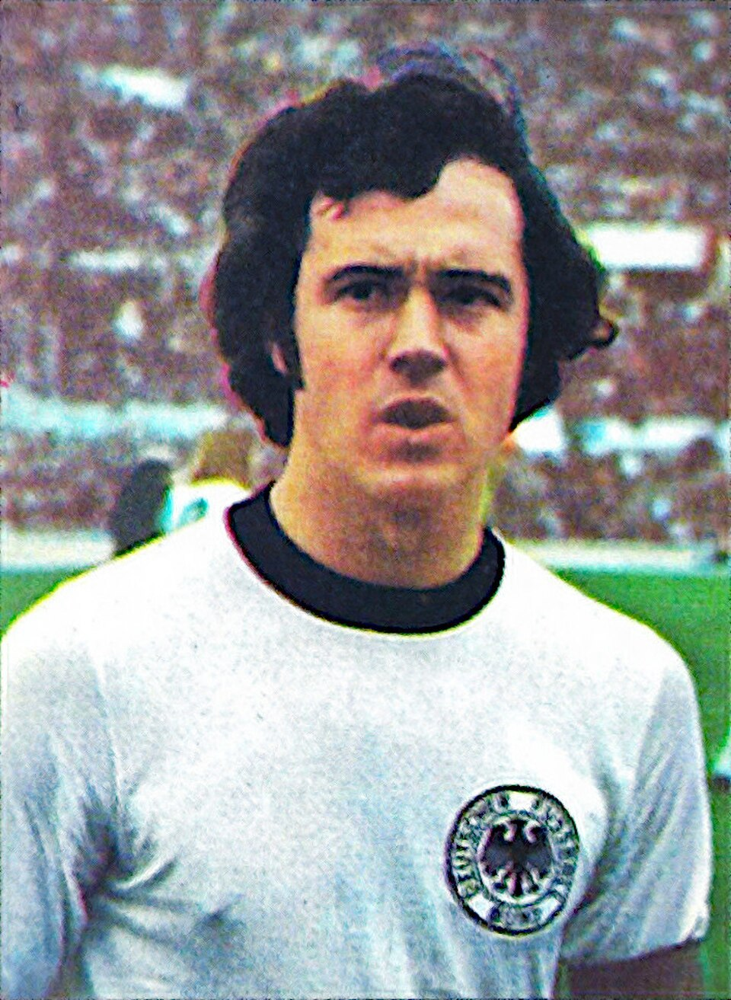
Фото: Panini Group, Wikimedia Commons
Франц Беккенбауэр
Клуб: Бавария (Германия)
Скорость: 82
Пас: 88
Удар: 73
Защита: 93
Дриблинг: 84
Физика: 81
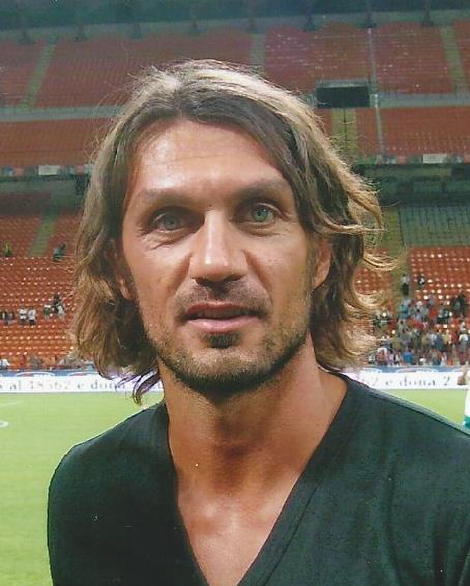
Паоло Мальдини
Клуб: Милан (Италия)
Скорость: 85
Пас: 74
Удар: 55
Защита: 95
Дриблинг: 69
Физика: 82
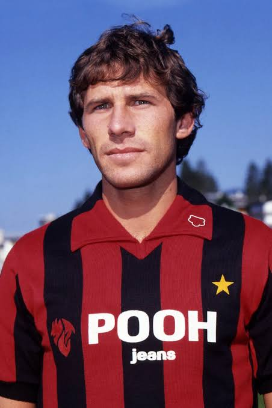
Фото: Kurt Schorrer, Wikimedia Commons
Франко Барези
Клуб: Милан (Италия)
Скорость: 73
Пас: 75
Удар: 48
Защита: 94
Дриблинг: 70
Физика: 83
🎯 Полузащитники
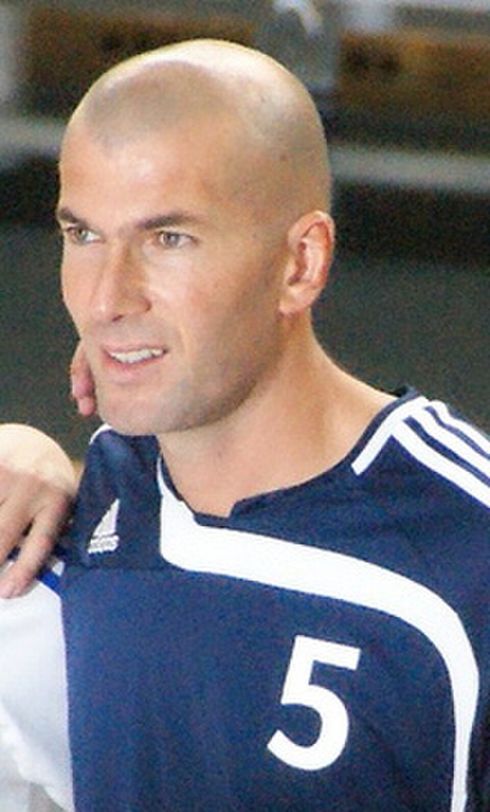
Фото: hywell, CC BY 2.0, Wikimedia Commons
Зинедин Зидан
Клуб: Ювентус (Италия), Реал Мадрид (Испания)
Скорость: 83
Пас: 94
Удар: 90
Защита: 73
Дриблинг: 94
Физика: 84
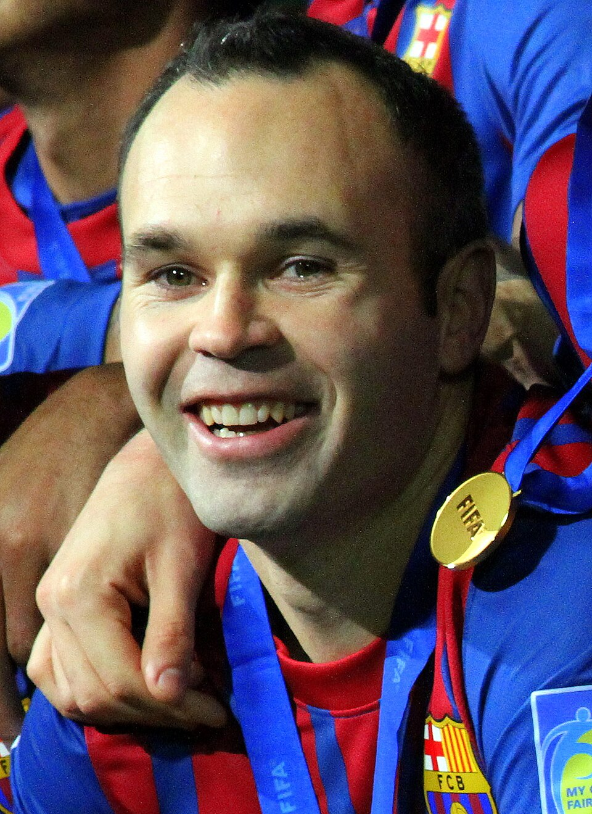
Фото: Christopher Johnson, CC BY-SA 2.0, Wikimedia Commons
Андрес Иньеста
Клуб: Барселона (Испания)
Скорость: 83
Пас: 91
Удар: 80
Защита: 62
Дриблинг: 92
Физика: 66
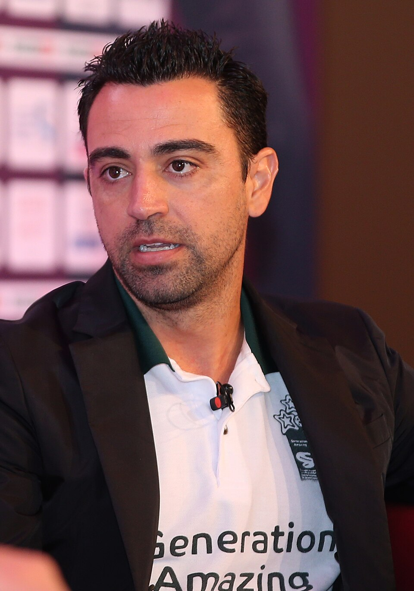
Хави
Клуб: Барселона (Испания)
Скорость: 80
Пас: 92
Удар: 78
Защита: 69
Дриблинг: 91
Физика: 70
⚡ Нападающие
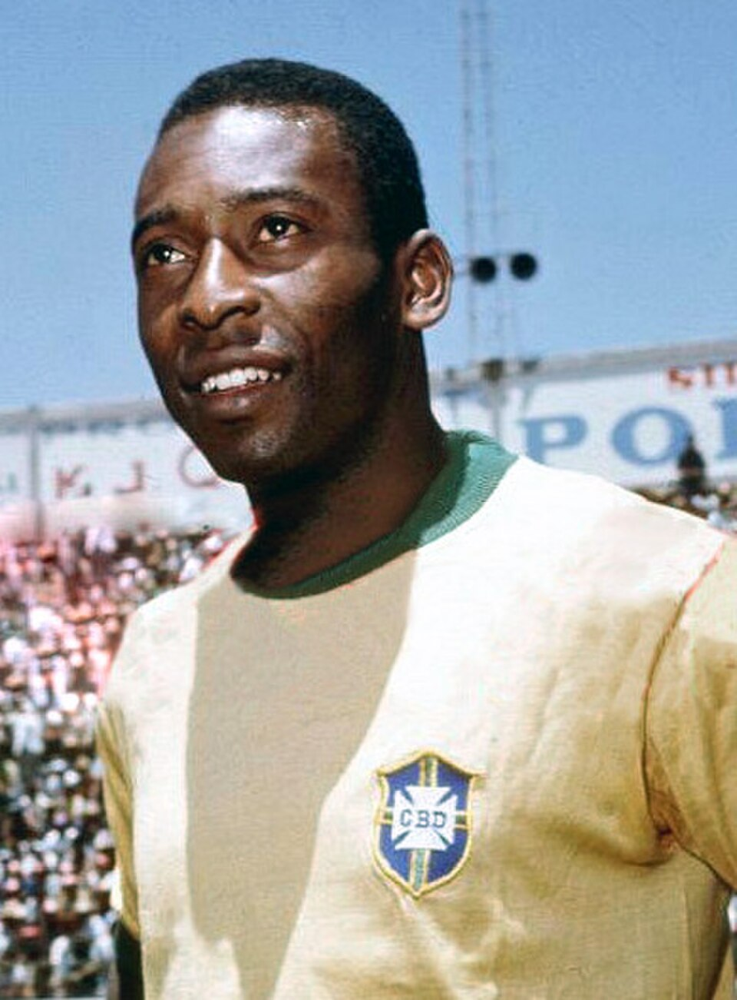
Пеле
Клуб: Сантос (Бразилия)
Скорость: 93
Пас: 91
Удар: 94
Защита: 58
Дриблинг: 94
Физика: 74
Роналдо (Феномен)
Клуб: Барселона, Интер, Реал Мадрид
Скорость: 94
Пас: 79
Удар: 94
Защита: 43
Дриблинг: 94
Физика: 75
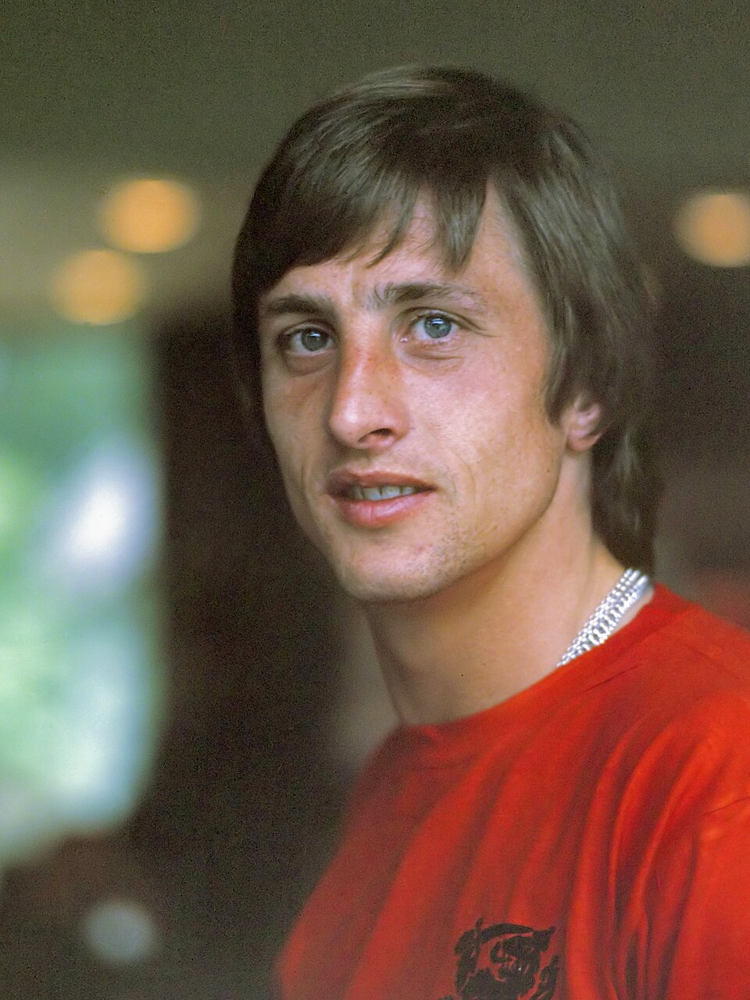
Йохан Кройф
Клуб: Аякс (Нидерланды), Барселона
Скорость: 90
Пас: 90
Удар: 91
Защита: 42
Дриблинг: 93
Физика: 73
Проверка JavaScript
Пока ничего не нажато...
⚔️ Сравни игроков
VSВыбери двух игроков, характеристику и нажми «Сравнить!»
🎮 Угадай футболиста
Вопрос 1 из 12 · Очки: 0
...
⚽ Пенальти
Выбери, куда бить. Забей хотя бы 3 гола из 5, чтобы пройти уровень!
🧤 Поймай мяч
Двигай вратаря стрелками ⬅️ ➡️ на клавиатуре или пальцем по полю. Поймай 10 мячей, чтобы пройти уровень. Пропустишь 3 — начнёшь уровень заново!